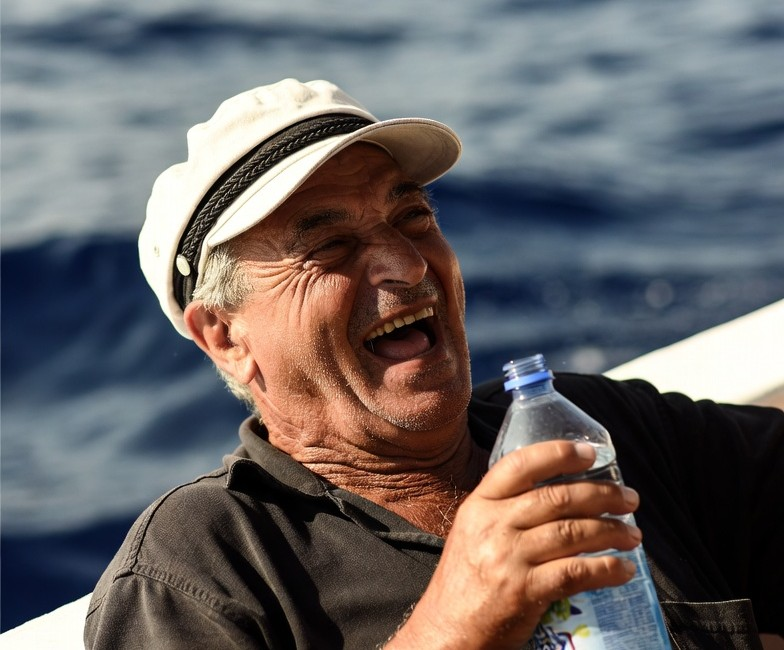

Kraanwater
Normaliter kan in Griekenland en op Kos het water uit de kraan gedronken worden. Echter, vaak zijn de leidingen oud en bevat het water zeer veel kalk. Soms smaakt het ook naar chloor.
Veel mensen prefereren flessenwater voor de smaak. Voor alledaagse dingen, zoals tandenpoetsen of het per ongeluk doorslikken, kan het geen kwaad.